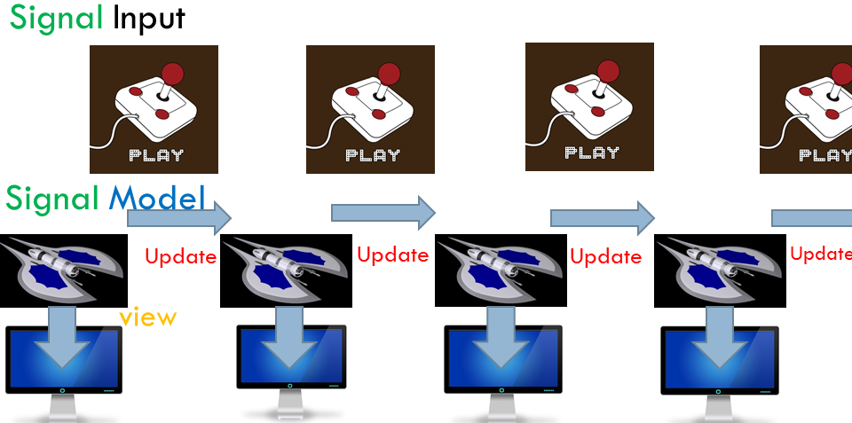

Snake in Purescript
How to program a simple game in Purescript
Posted: 2016-11-06 , Modified: 2016-11-06
Tags: purescript, programming, functional programming, game
How to program a simple game in Purescript
Posted: 2016-11-06 , Modified: 2016-11-06
Tags: purescript, programming, functional programming, game
Purescript is a functional programming language that compiles down to Javascript. In this post, I describe the process of building a simple game, Snake, in PureScript. Along the way, we’ll see how input/signals work, how to render to the screen, and how to work with arrays. I assume familiarity with functional programming. I’ll make some comparisons with Haskell and Elm.
I like Purescript because it has the functional power of Haskell, while fitting very well into the web ecosystem (e.g. interops with Javascript), like Elm. Think of it as Elm with all the features that come with Haskell, such as monads.
Some resources:
purescript-signal
First follow the instructions here to install Purescript.
Start a new project by
mkdir basic-games
cd basic-games
pulp initCreate a file Snake.purs in src/.
First, the imports.
module Snake where
import Prelude -- must be explicitly imported
import Control.Monad.Eff (Eff)
import Control.Monad.Eff.Console (CONSOLE, log)
import Control.Monad.Eff.Random (RANDOM, randomInt)
import Data.Array (length, uncons, slice, (:), last)
import Data.Array.Partial (head)
import Data.Functor
import Data.Generic
import Data.Int
import Data.Maybe
import Data.Traversable
import Data.Tuple
import Graphics.Canvas (CANVAS, closePath, lineTo, moveTo, fillPath,
setFillStyle, arc, rect, getContext2D,
getCanvasElementById, Context2D, Rectangle, clearRect)
import Partial.Unsafe (unsafePartial)
import Signal (Signal, runSignal, foldp, sampleOn, map4)
import Signal.DOM (keyPressed)
import Signal.Time (Time, second, every)
import Test.QuickCheck.Gen -- for randomnessYou will need to install all these packages. You can install them one at a time via
bower install <package-name> --saveor copy the bower.json file here and do bower install to install all of them at once.
We break our program into the following parts. (For more information, see the Elm architecture tutorial.)
step function which given an input and the current model, returns the updated model. For Snake, an update would be the direction, and the step function would move the snake one unit in that direction, and check for things like whether the snake ate the mouse or bumped into the wall.a is a time-varying value of type a. For a primer on signals see here.1
To put these components together we use:
foldp, the magic function that “folds” the input signals into the model via the step function. Note the similarity to foldl both in the type signature and the picture. In the picture a corresponds to Input and b corresponds to Model. So given time-varying inputs and a starting model, foldp produces a time-varying model.
foldp :: forall a b. (a -> b -> b) -> b -> (Signal a) -> (Signal b)runSignal: Given a signal encapsulating an effect, makes the effect happen.
runSignal :: forall e. Signal (Eff e Unit) -> Eff e Unit(In the old version of Elm, main is simply a Signal, but here, the type of main is an analogue of IO in Haskell.)
The skeleton of the program looks like this.
-- Model
type Model = ???
start :: Model
start = ???
-- Update
type Input = ???
step :: Input -> Model -> Model
step inp m = ???
-- View
render :: Model -> Eff _ Unit
render m = ???
-- Signal
input :: Eff _ (Signal Input)
input = ???
-- Putting it all together
main :: Eff _ Unit
main =
void do
signal <- input
-- game :: Signal Model
game <- foldp step start signal
-- map :: forall a b. (a -> b) -> f a -> f b
-- (Model -> Eff _ Unit) -> Signal Model -> Signal (Eff _ Unit)
runSignal (map render game)The Eff monad corresponds to Haskell’s IO monad, but uses extensible effects: it lists out explicitly all the effects it has (access to randomness, DOM, drawing canvas, console, etc.). For example, Eff (random :: RANDOM, canvas :: CANVAS | eff) Unit means having effects that include RANDOM and CANVAS). PureScript will infer all effects if you put _. See Chapter 8.10 of the PureScript book.
For a warm-up, here is a basic example following this paradigm. Here, the model is an integer (the location on a single axis), the update is moving -1, 0, or 1 units, the view is simply writing the location to the console, and the signal comes from the arrow keys once every second.
For Snake, the model is a record containing
mousesnake as an array of pointsaliveWe also include some the dimensions xd, yd of the game board, the size of each square (alternatively, these can be hard-coded in), and the prev square (this is optional—it gives us an easy way to erase the tail of the snake when it moves). Valid positions are in \([1,xd]\times [1,yd]\).
We want the mouse location to be generated at random. How to do this? We’ll fill in that part later. (For now, you can put in an arbitrary point.)
Note also that the y-coordinate is 0 at the top of the screen and increases going down. The snake starts at the upper-left corner moving right.
type Point = Tuple Int Int
--MODEL
type Snake = Array Point
type Model = {xd :: Int, yd :: Int, size :: Int, mouse:: Point, snake :: Snake, dir :: Point, alive :: Boolean, prev :: Maybe Point}
start :: Model
start =
{xd : 25, yd : 25, size : 10, mouse : ??, snake : [Tuple 1 1], dir: Tuple 1 0, alive : true, prev : Nothing}Note unlike Haskell,
Tuple.Array.Boolean and have values true or false.First we need two helper function: check to see if a point is in bounds, and check to see if the snake is OK (given the point where the head of the snake moves, check to see that it is in bounds and not part of the snake’s body).
inBounds :: Point -> Model -> Boolean
inBounds (Tuple x y) m =
(x > 0) && (y > 0) && (x <= m.xd) && (y <= m.yd)
checkOK :: Point -> Model -> Boolean
checkOK pt m =
let
s = m.snake
in
m.alive && (inBounds pt m) && not (pt `elem` (body s))
body :: forall a. Array a -> Array a
body li = slice 0 ((length li) - 1) liFor the step function, there are 3 cases:
body is all of the snake except the last point.alive = false and nothing else happens.step :: Partial => Point -> Model -> Model
step dir m =
let
-- override the direction with the input, unless there is no input (corresponding to (0,0))
d = if dir /= Tuple 0 0
then dir
else m.dir
s = m.snake
let hd = (head s + d)
if checkOK hd m
then
if (hd == m.mouse)
then m { snake = hd : s
, mouse = ???
, dir = d
, prev = Nothing -- snake grows; nothing is deleted
}
else m { snake = hd : (body s)
, dir = d
, prev = last s -- snake moves; the last pixel is deleted
}
else m { alive = false, prev = Nothing}Some differences from Haskell:
Partial. head as imported from Data.Array.Partial is a partial function because it is undefined on []. (We need not worry because the snake will never be empty.)forall.Note that we can add points! (Note the line head s + d.) This is because Data.Tuple has the instance (Ring a, Ring b) => Ring (Tuple a b). If both components of a tuple can be added, then addition is automatically defined for the tuple.
Given the model, we have 4 things to render: the walls (a \(27\times 27\) rectangle here), the background (a \(25\times 25\) rectangle), the snake and the mouse. For instructions on using purescript-canvas see Chapter 9 of the PureScript book. Change the colors as you wish.
render :: forall eff. Partial => Model -> (Eff _ Unit)
render m =
void do
let s = m.snake
let size = m.size
Just canvas <- getCanvasElementById "canvas"
ctx <- getContext2D canvas
--walls
setFillStyle wallColor ctx
fillPath ctx $ rect ctx
{ x: 0.0
, y: 0.0
, w: toNumber $ size*(m.xd + 2)
, h: toNumber $ size*(m.yd + 2)
}
--interior
setFillStyle bgColor ctx
fillPath ctx $ rect ctx
{ x: toNumber $ size
, y: toNumber $ size
, w: toNumber $ size*(m.xd)
, h: toNumber $ size*(m.yd)
}
--snake
for s (\x -> colorSquare m.size x snakeColor ctx)
--mouse
colorSquare m.size (m.mouse) mouseColor ctx
colorSquare :: forall eff. Int -> Point -> String -> Context2D -> Eff (canvas :: CANVAS | eff) Context2D
colorSquare size (Tuple x y) color ctx = do
setFillStyle color ctx
fillPath ctx $ rect ctx $ square size x y
square :: Int -> Int -> Int -> Rectangle
square size x y = { x: toNumber $ size*x
, y: toNumber $ size*y
, w: toNumber $ size
, h: toNumber $ size
}
white = "#FFFFFF"
black = "#000000"
red = "#FF0000"
yellow = "#FFFF00"
green = "#008000"
blue = "#0000FF"
purple = "800080"
snakeColor = white
bgColor = black
mouseColor = red
wallColor = greenThe render function is a bit inefficient since it is redrawing the entire canvas every step (it doesn’t make much difference for such a simple game though). We can replace later calls to render with renderStep which only changes the squares that need to be changed at each time step. (There is much more freedom than Elm to draw specify what you want to draw and redraw.)
renderStep :: forall eff. Partial => Model -> Eff (canvas :: CANVAS | eff) Unit
renderStep m =
void do
let s=m.snake
Just canvas <- getCanvasElementById "canvas"
ctx <- getContext2D canvas
colorSquare m.size (head s) snakeColor ctx
case m.prev of
Nothing -> colorSquare m.size (m.mouse) mouseColor ctx
Just pt -> colorSquare m.size pt bgColor ctx
--make use of the fact: either we draw the mouse or erase the tail, not both, at any one step
The step function takes an update of type Point, so we need to produce a Signal Point.
purescript-signal contains signals from various sources, e.g. which keys are pressed and the time. We use the following functions from there:
keyPressed :: forall e. Int -> Eff (dom :: DOM | e) (Signal Boolean). (Note we need access to the DOM to get a keybord signal.) The key codes for L/U/D/R are 37, 38, 40, 39. We map them to \((-1,0), (0,-1), (0,1), (1,0)\), respectively.every :: Time -> Signal Time periodically signals the time.sampleOn :: forall a b. (Signal a) -> (Signal b) -> (Signal b) creates a signal which yields the current value of the second signal every time the first signal yields. Usually the first signal is a periodic time signal (e.g. every second).Below, input gives a direction corresponding to the arrow key pressed every 1/20 second.
--SIGNALS
inputDir :: Eff _ (Signal Point)
inputDir =
let
f = \l u d r -> ifs [Tuple l $ Tuple (-1) 0, Tuple u $ Tuple 0 (-1), Tuple d $ Tuple 0 1, Tuple r $ Tuple 1 0] $ Tuple 0 0
--note y goes DOWN
in
map4 f <$> (keyPressed 37) <*> (keyPressed 38) <*> (keyPressed 40) <*> (keyPressed 39)
input :: Eff _ (Signal Point)
input = sampleOn (fps 20.0) <$> inputDir
fps :: Time -> Signal Time
fps x = every (second/x)
ifs:: forall a. Array (Tuple Boolean a) -> a -> a
ifs li z = case uncons li of
Just {head : Tuple b y, tail : tl} -> if b then y else ifs tl z
Nothing -> z At this point, we can slap in a main and then compile.
main :: Eff _ Unit
main =
void $ unsafePartial do
-- create the signal
dirSignal <- input
game <- foldp step start dirSignal
runSignal (map render game)But we don’t have randomness yet.
How do we model randomness in a purely functional program?
We need to add randomness as an effect.
The initialization and step functions need randomness, so we can try to rewrite the functions so they have the following type signatures:
init :: Eff (random:: RANDOM) Model
step :: forall e. Point -> Eff (random::RANDOM | e) Model -> Eff (random::RANDOM | e) Model
render :: Eff (random:: RANDOM) Model -> Eff _ Unit
input :: Eff _ (Signal Update)
-- Putting it all together
main :: Eff _ Unit
main =
void do
startGame <- init
signal <- input
-- game :: Signal Model
game <- foldp step startGame signal
-- map :: (a -> b) -> f a -> f b
-- (Model -> Eff _ Unit) -> Signal Model -> Signal (Eff _ Unit)
runSignal (map render game)If you try this you will get very weird behavior: the mouse will jump all over the place! My best explanation for this is that the effects are compiled in un-executed form in the signal, and at each step, the effects are executed starting from the beginning. Not only does this mean that the random numbers generated are different, it means that the the program will run slower and slower. See a discussion here.
The standard way to do this is to include a Seed in the state, and whenever we need randomness, use the seed to generate a random number and a new seed, and update the seed. We can add a field for seed in Model…
But this is clunky, and just the kind of thing that monads make easier to express! This sounds like a State Seed and in fact, the Gen monad is (basically) just this:
type GenState = { newSeed :: Seed, size :: Size }
newtype Gen a = Gen (StateT GenState Identity a)Our step function will no longer be a -> b -> b, but will draw on randomness, so will take the form a -> b -> Gen b. We now replace
foldp :: forall a b. (a -> b -> b) -> b -> (Signal a) -> (Signal b)with the function
foldpR :: forall a b e. (a -> b -> Gen b) -> b -> (Signal a) -> Eff (random :: RANDOM | e) (Signal b)This is very reusable, and will make anything else we write with randomness painless.
For this, we need a bit of footwork. Behind the scenes, we do as we said before: a function f :: a -> b -> Gen b is the same as a function f' :: a -> (b, GenState) -> (b, GenState). We unravel f, and foldp using this f' as the step function and an initial seed. For sake of reusability, I’ve put foldpR in a separate module, in more generality than necessary, here; add import SignalM to Snake.
The function step :: Partial => Point -> Model -> Model is now step :: Partial => Point -> Model -> Gen Model. In the branch of the if statement where the snake eats the mouse, we keep generating points within the dimensions until the point is not part of the snake. Note that PureScript uses pure instead of return. We add pure to the other branches (not shown).
do
newMouse <- untilM (\pt -> not (pt `elem` s || pt == hd)) (randomPoint m.xd m.yd)
pure $ m { snake = hd : s
, mouse = newMouse
, dir = d
, prev = Nothing -- snake grows; nothing is deleted
}The auxiliary functions here are (untilM being the monadic analogue of “repeat until”)
untilM :: forall m a. (Monad m) => (a -> Boolean) -> m a -> m a
untilM cond ma =
do
x <- ma
if cond x then pure x else untilM cond ma
randomPoint :: Int -> Int -> Gen Point
randomPoint xmax ymax =
do
x <- chooseInt 1 xmax
y <- chooseInt 1 ymax
pure $ Tuple x yWe also similarly incorporate randomness in the starting model by replacing start :: Model with init :: forall e. Eff (random::RANDOM | e) Model. The final main looks like
main :: Eff _ Unit
main =
void $ unsafePartial do
--draw the board
gameStart <- init
render gameStart
-- create the signals
dirSignal <- input
-- need to be in effect monad in order to get a keyboard signal
game <- foldpR step gameStart dirSignal
runSignal (map renderStep game)See all the code here.
The version I linked to has a few extra lines of code so that pressing SPACE restarts the game; the additions are in SnakeS.purs, at the bottom.
To build the project, run
mkdir dist
pulp build
pulp browserify -m Snake/index.js >> dist/Snake.jsBrowserify creates a javascript file with all the javascript libraries included. We need a html file to host the javascript. Create html/index.html with a canvas of the appropriate dimensions:
<!DOCTYPE html>
<html>
<head>
<title>Snake</title>
</head>
<body>
<canvas id="canvas" width="270" height="270" style="border: 1px solid black; display: block; margin: auto;"></canvas>
<script type="text/javascript" src="../dist/Snake.js"></script>
</body>
</html>Now open the file and play!
The PureScript signal library is very similar to the former Elm signal library. Note that Elm no longer uses signals.↩